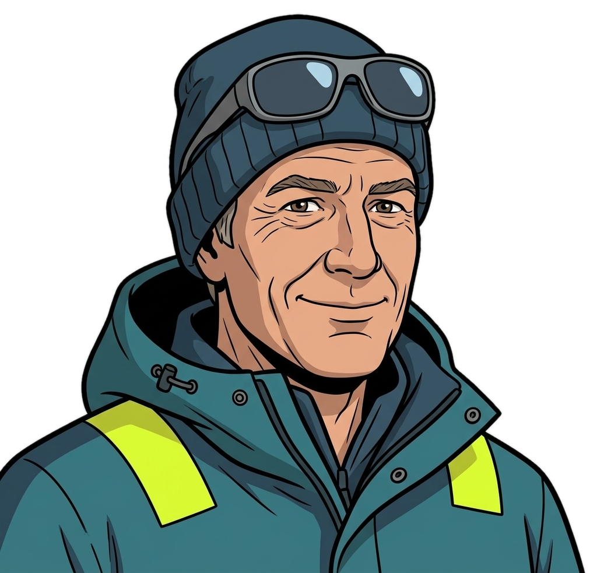
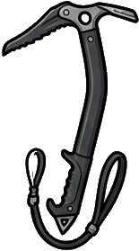

КРАСНОЯРСКАЯ ШКОЛА АЛЬПИНИЗМА • МАКСИМАЛЬНЫЙ ЛИМИТ: 10.0 КГ
Описание предмета и его реальная альпинистская функция на маршруте.

СВОБОДНОЕ ЛЕДОЛАЗАНИЕ • КРАСНОЯРСКАЯ ШКОЛА АЛЬПИНИЗМА
Откройте экспедиционную аптечку и выберите препарат, снимающий отек мозга!
Срубите ледорубом чистый глетчерный фирн, чтобы наполнить котелок горелки Jetboil!

Классический инструмент альпиниста для самостраховки на ледовом склоне и рубки ступеней.
Давление в баллоне упало до критического! Открутите замёрзший редуктор и установите полный баллон!
Для удобного обзора скального рельефа и комфортного управления пальцами поверните смартфон горизонтально (Альбомный режим).